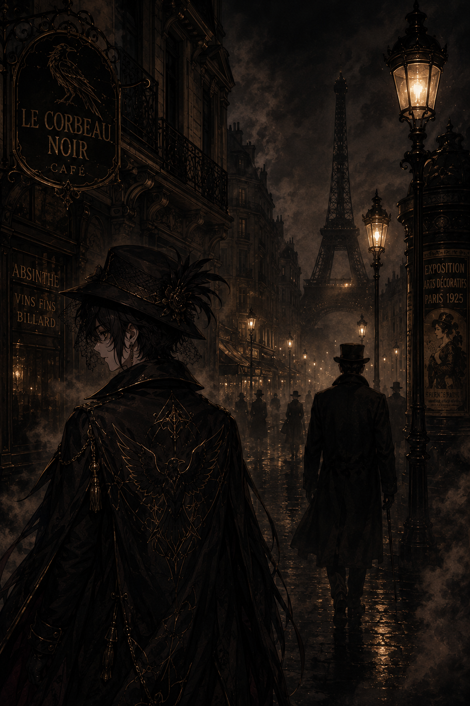
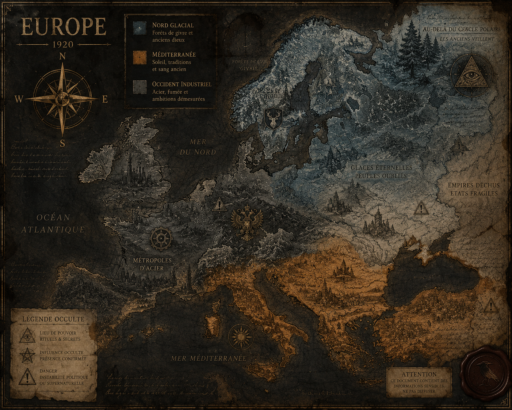
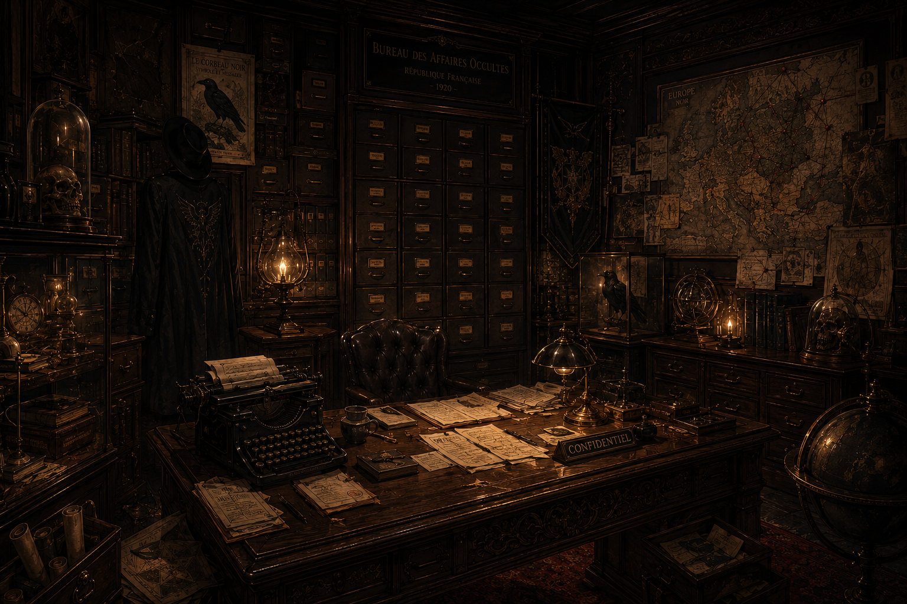

Avez-vous déjà demandé qui écrit la première ligne qui rend une chose réelle ?
Les histoires vous diront que les monstres naissent quand les dieux dorment ou quand les hommes péchèrent ; les érudits vous diront que les monstres sont un raccourci pour la contagion, la famine ou le temps qu'il fait ; les enfants vous diront que les monstres naissent de la forme de leurs ombres sur le mur.
Toutes ces réponses sont vraies en partie : et toutes manquent le fait plus ordinaire, plus terrible.
« Les monstres sont faits d'attention. »
Pas l'attention dramatique des projecteurs et des sanctuaires, mais la petite attention accumulée de communautés entières : les noms murmurés aux carrefours, la forme d'un avertissement gravée dans une poutre, le rituel qui ferme une porte et garde une seule peur privée du bon côté du registre.
Une légende commence au moment où un danger reçoit des contours que les gens peuvent cerner de leurs mains. Donnez un nom à la peur, et la peur devient une chose que l'on peut repousser... ou négocier avec.
À travers des régions qui ne se rencontrent jamais, les gens accomplissent le même travail silencieux de donner des contours à l'inconnu.
Dans le nord, où les nuits prennent le son de l'os et où les toits respirent sous le poids de la neige, les choses sans nom prennent la qualité de l'absence : une faim qui a vidé une vieille famille, un lent silence qui répond à un bateau perdu. Ces histoires sont cartographiées en longues voyelles intemporelles ; elles sont patientes et froides.
Dans les places ensoleillées et les villes blanchies à la chaux, où les gens se pressent et les voix ricochant, la même chose sans nom portera un visage de feu et d'accusation. Elle se rassemble dans la colère publique, dans la façon dont les machines broient les subsistances en une saison.
Dans les grandes villes noires de verre de néon et d'air de métro, la même chose sans nom porte les données comme une peau : des motifs, des répétitions, un raccourci pour ce que les machines enregistrent et que les humains oublient.
Il y a des raisons pratiques à cela. Les humains sont des animaux en quête de motifs ; la charge cognitive est réelle et fatale. Si une communauté ne pouvait pas réduire la complexité de la perte en habitudes et en comptes, elle serait paralysée par la peur et s'effondrerait sous le poids de ne pas savoir quoi faire.
Mais la conservation a un prix. Quand une société transforme sa réponse en profession, elle crée des incitations : des carrières construites sur le maintien du récit cohérent, des archives qui privilégient la continuité plutôt que la contradiction.
Le monstre devient non seulement un danger mais une description de poste.

Paris, 3h du matin — Archive visuelle #001
« Les titres, les prières funéraires, les ordonnances municipales... chaque lieu parle dans son propre registre et apprend ainsi à appeler la même souffrance par des noms différents. Le langage ne fait pas que décrire ; il prescrit. »
L'Office pour la Gestion, le Confinement et l'Élimination des Entités Surnaturelles — ou simplement « L'Office » — est une société secrète fondée au XIVe siècle, après la Peste Noire que certains savants de l'époque savaient être d'origine autrement plus sinistre que naturelle.
Les agents de l'Office traquent et éliminent les entités hostiles. Vampires en délire, loups-garous enragés, démons invoqués par imprudence — chaque menace est cataloguée, évaluée, et si nécessaire, détruite.
Toutes les entités ne peuvent pas être tuées. Certaines sont trop anciennes, trop puissantes, ou trop… intéressantes. L'Office maintient des sites de confinement secrets à travers l'Europe.
Chaque entité, chaque incident, chaque agent est minutieusement documenté. Les archives contiennent des siècles de connaissances interdites, protégées par des sceaux que seuls les initiés peuvent briser.

« Au grand jour, l'Office se présente comme une entreprise de consultation ésotérique — des charlatans pour les riches, des marabouts pour les superstitieux. Personne ne soupçonne la vérité. Et c'est ainsi que ça doit rester. »
Après la Peste Noire, un consortium d'alchimistes, de moines et de nobles créent l'Office pour contenir les entités responsables de la catastrophe.
Événement déclencheurLes archives sont scellées. L'Office devient une société secrète, opérant sous couverture de guildes marchandes et de confréries religieuses.
RestructurationLe chaos révolutionnaire libère plusieurs entités confinées. L'Office subit ses plus lourdes pertes. Les archives de Paris brûlent partiellement.
CatastropheLes tranchées réveillent des choses endormies depuis des siècles. L'Office déploie des agents sur tous les fronts, combattant deux guerres à la fois.
Conflit majeurYoana Noxley, 24 ans, prend la direction de l'Office. Sous sa férule, l'organisation s'adapte au monde moderne — tout en restant dans l'ombre où elle a toujours opéré.
Présent